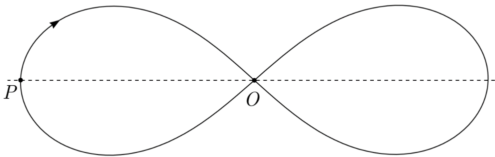

X19 (2019) — English translation
In the general case, the motion of three gravitationally interacting bodies is chaotic and described in a complex way. However, in some cases the movement may be regular. The simplest example of such periodic motion is the circular motion of three bodies located at the vertices of an equilateral triangle. In this problem, however, we will consider a more complex periodic motion. Relatively recently, in 1993, it was discovered that three identical point masses can periodically move along a common trajectory shaped like a figure eight (see figure). The figure in the figure represents the correct trajectory of movement, constructed according to computer calculations. If necessary, in a larger version of the drawing, you can measure the distances between points of the figure using a ruler.

Let's define the terminology. Let us number the bodies with numbers $1$, $2$ and $3$ in accordance with the order in which they pass the leftmost point of the trajectory $P$. Let $O_2$ and $O_3$ be the positions of bodies $2$ and $3$, respectively, at the moment when body $1$ is at the midpoint $O$. At point $O$ the body $1$ moves down to the right. Similarly, $P_2$ and $P_3$ are the positions of bodies $2$ and $3$, respectively, at the moment when body $1$ is at point $P$. Let also $T$ be the total period of motion of each of those along this trajectory.
Find the time of motion of one of the bodies
Source: https://pho.rs/p/318